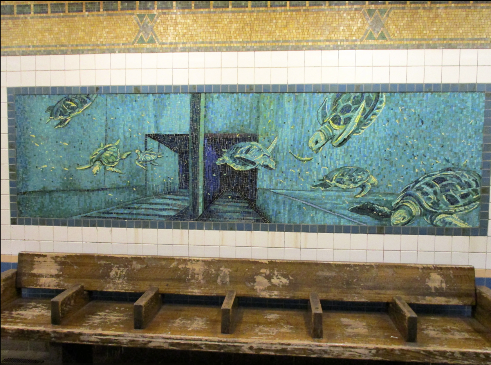
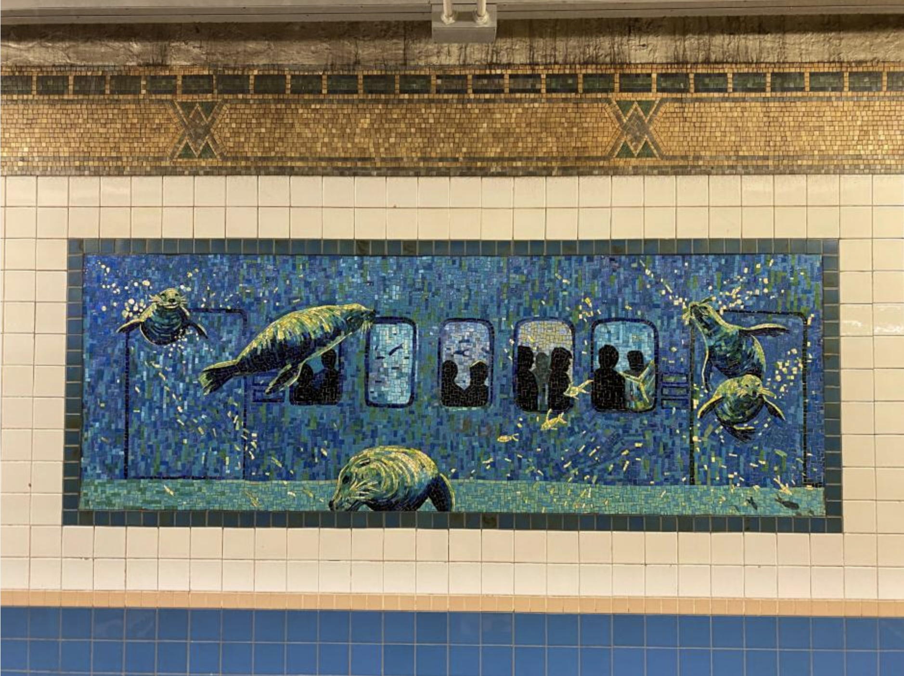
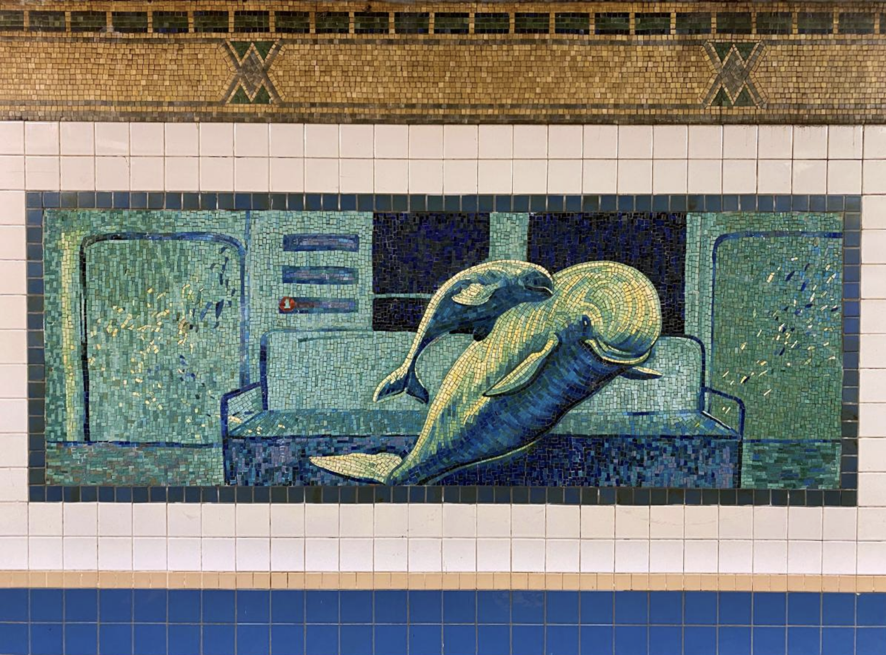
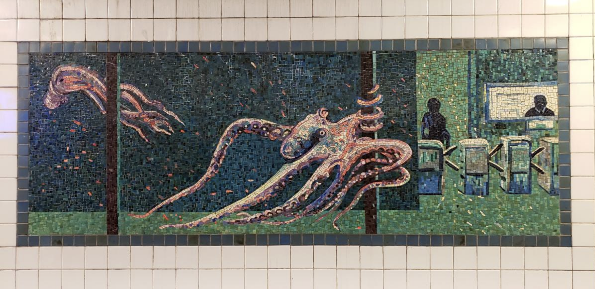
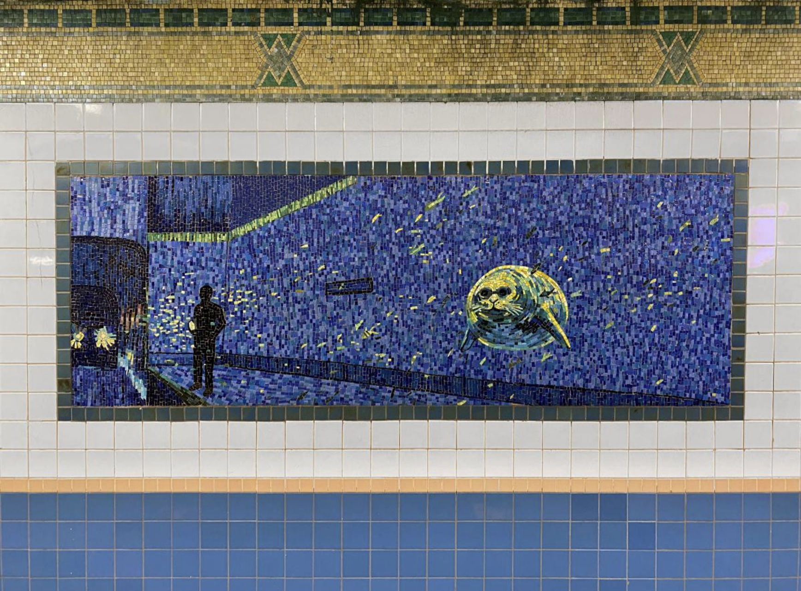

"Platform Diving" by Artist: Deborah Brown est. 1994






Right outside of my grandparents house on the beach in Moss Beach, CA
At the Houston Street Station, where the 1 and 2 trains run, here you can see a sea of
glass mosaics, demonstrating what manhattan might as well look like in a couple years,
when it eventually sinks. The Artist Deborah Brown is from California, similar to me,
which makes these piece to me all the more special, because it is obvious where she gaimed
her inspiration from. I haven't seen nearly any art really integrating marine life into the
metropolitan city, and thats probably because any nature here, has to fight to claim its spot.
I hope to see more of this, possibly to encourage New Yorkers to try and clean up the nearby
waterfronts.